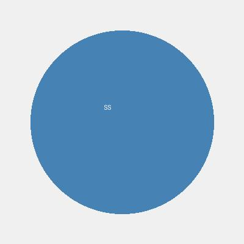

|
Shashank Sangar
I'm a Technical Recruiting Leader at Tesla, where I lead AI talent acquisition for Tesla's Autopilot, Robotics, and AI teams.
At Tesla, I focus on building world-class teams of AI researchers and engineers who are developing cutting-edge technologies in computer vision, deep learning, and autonomous systems. I specialize in identifying and recruiting top ML/DL talent from both industry and academia.
Email /
GitHub /
LinkedIn
|

|
AI Recruiting Experiments
As a leader in Tesla's AI recruiting team, I've been experimenting with agentic AI tools to enhance talent screening and matching. These projects leverage cutting-edge AI to automate and improve the recruiting process, drawing from my experience in identifying top ML/DL talent.
|
AI Talent Copilot
Research-Focused AI Talent Screening System
View on GitHub
An AI-powered system for analyzing academic publications to identify and recruit top research talent. Features include publication scraping from arXiv and Google Scholar, research trajectory mapping, cross-lab mobility tracking, and intelligent matching based on research fit, impact, and adaptability. Built with Python and integrated with Anthropic Claude via Vertex AI.
Key Features: Automated publication analysis, multi-dimensional candidate scoring, personalized outreach generation.
This tool is inspired by Tesla's need for exceptional AI researchers and engineers, aiming to streamline the initial screening process for high-potential candidates.
|
Open Positions
I'm recruiting for Tesla AI, focusing on building teams that are developing, training, and deploying the biggest and most incredible neural networks in the world. We're solving the most complex real-world AI problems at scale. The following positions are currently open on our teams.
|
AI Engineer, Policy & Video Generation, Tesla AI
Palo Alto, California
Req. ID: 262407, Full-time
job details /
apply
Recent research has shown that it is possible to post-train video generation models into video action models that work well as generalized policies. At Tesla, we're pushing the boundaries of video action models with the goal of deploying these models that run at real-time on the car and bot. We are also interested in expanding the capabilities of these models to omni models that are able to take multimodal inputs (e.g. video, audio, text, proprioception) and generate multimodal outputs (e.g. video, audio, text, actions). You will have the opportunity to work on the full stack of model training and deployment, including data, pre-training, post-training, reinforcement learning and distillation.
|
AI Engineer, World Modeling & Video Generation, Tesla AI
Palo Alto, California
Req. ID: 255816, Full-time
job details /
apply
Video generation models have made significant progress recently but continue to struggle with respecting physics, causality, and fine controllability. At Tesla, we’re training world models on millions of hours of real-world action-conditioned video using one of the biggest compute clusters. Instead of generating more AI slop, our goal is to faithfully reproduce real-world successes and failures, on both the bot and car platform, for the purposes of evaluation and closed-loop reinforcement learning.
|
AI Engineer, ML Inference Optimization, Tesla AI
Palo Alto, California
Req. ID: 255357, Full-time
job details /
apply
Tesla’s AI team is pushing the frontier of real-world machine learning, building models that reason, predict, and act with human-level physical intelligence. We train and deploy large-scale ML systems powering products from Autopilot to Optimus. As part of the Model Optimization group, you will work at the intersection of machine learning and systems, designing our most advanced models to run efficiently across Tesla’s diverse compute stack, from data centers to edge AI accelerators. You will design the model architecture and engineer algorithmic optimizations that make large-scale model inference fast, reliable, and hardware-aware.
|
|
{kind=link}